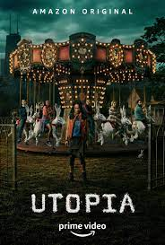

Utopia
 One of the tv shows I recommend is called "Utopia" Here is the link to a trailer of the show The show takes place in a siuation where mysterious pandemic happens and it is so related to what is actually happenign in the world which made me more intereted in watching. Utopia
- A brief plot of Utopia cited from IMDb if you are interested.
"A group of young adults, who meet online, get a hold of a cult underground graphic novel, which not only pins them as a target of a shadowy deep state organization, but also burdens them with the dangerous task of saving the world."
 I also love the commedy tv series
I also love the commedy tv series